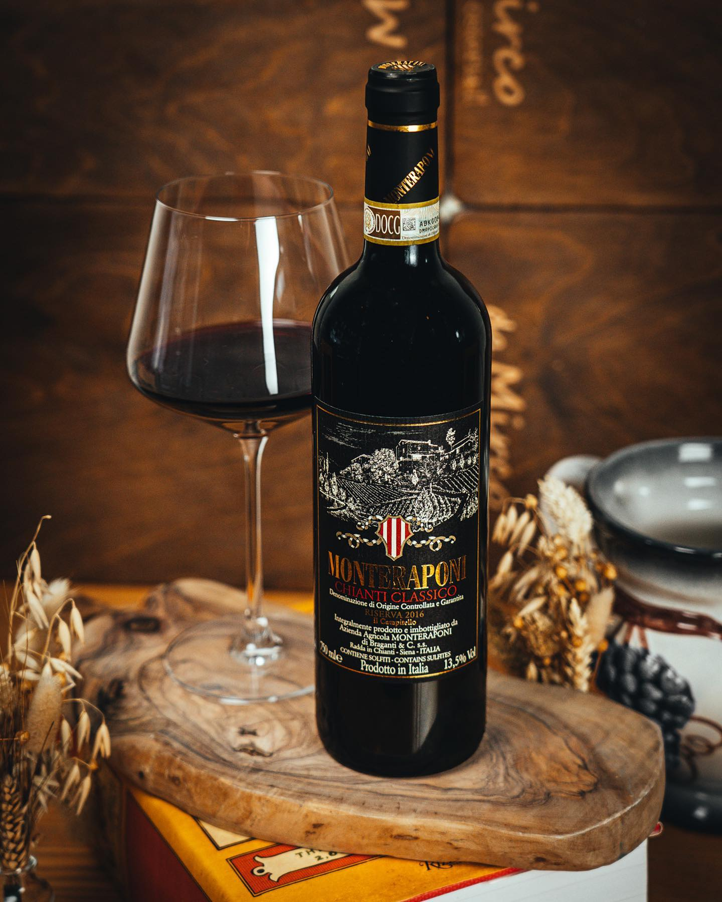
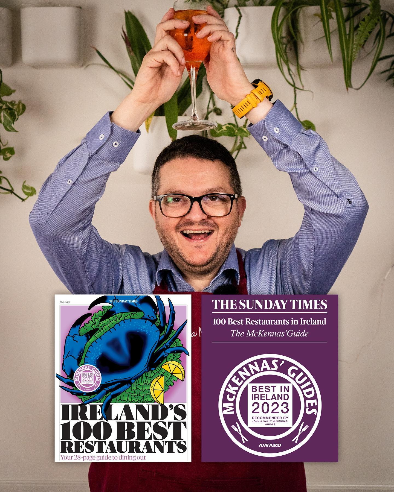
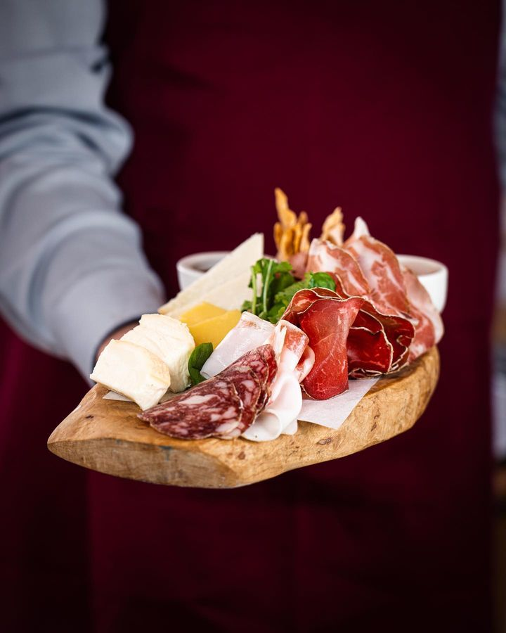

True & memorable taste made with love and tradition
Step into our restaurant and immerse yourself in the warm and inviting atmosphere that embodies the essence of Italy. The rustic decor, reminiscent of a charming Italian trattoria, creates an intimate and cozy setting for your dining pleasure.

We know how to make one of the best Italian food in the city.

A good selectoin of Wines.

Listed at Ireland's Best Restaurants.

Tradional receipts